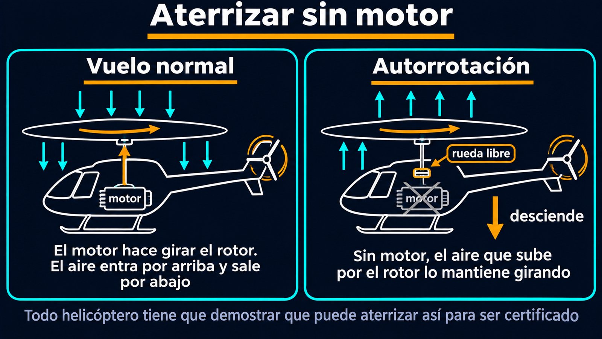

Alas que giran: colectivo, cíclico, rotor de cola y autorrotación
Un avión necesita moverse para que el aire pase por sus alas. Un helicóptero puede quedarse quieto en el aire, subir en vertical o ir de costado. El truco es que sus alas giran: las palas del rotor son alas largas y finas que se mueven en círculo, y el aire pasa por ellas aunque el helicóptero esté quieto. Controlar algo así requiere más mandos que un avión, y resolver un problema que el avión no tiene: el par de giro.
Cada pala del rotor es un perfil alar, y produce sustentación como cualquier ala: desvía el aire hacia abajo. En vuelo normal, según el manual de vuelo de helicópteros de la Administración Federal de Aviación de Estados Unidos (FAA), el rotor toma aire de arriba y lo expulsa hacia abajo [1]. La diferencia con un avión es que la velocidad del aire sobre la pala viene de su giro, y es mayor en la punta que cerca del eje [1].
Según el manual de la FAA, un helicóptero tiene cuatro mandos de vuelo: el cíclico, el colectivo, los pedales antipar y el acelerador [1].
El manual explica una sutileza del cíclico: como el disco del rotor se comporta como un giróscopo, una pala alcanza su máxima subida unos 90° de giro después del punto donde se le aumentó el ángulo [1]. Es la precesión giroscópica, y los mandos están diseñados teniendo eso en cuenta.
El paraguas que se inclina: imaginá el disco del rotor como un paraguas que empuja el aire hacia abajo. Con el colectivo, el paraguas empuja más fuerte o más suave. Con el cíclico, se inclina hacia un costado, y el empuje, que antes iba solo para arriba, ahora también va para ese lado: el helicóptero avanza en esa dirección.
Cuando el motor hace girar el rotor principal hacia un lado, la tercera ley de Newton empuja al fuselaje a girar hacia el otro. El manual de la FAA llama «par» a esa tendencia del helicóptero a girar en sentido contrario al rotor [1]. Para compensarla, la mayoría de los helicópteros tienen un rotor de cola: un rotor chico, montado vertical en la cola, que empuja o tira de ella para contrarrestar el par [1]. Cuanta más potencia le da el motor al rotor principal, más empuje tiene que dar el rotor de cola, y eso se ajusta con los pedales [1]. Según el manual, es el diseño que eligió Igor Sikorsky para su VS-300, y se convirtió en la convención para los helicópteros [1].
El rotor de cola trae su propio efecto: al empujar la cola hacia un costado, todo el helicóptero tiende a desplazarse en esa dirección cuando está quieto en el aire. El manual lo llama tendencia a la traslación [1].
¿Qué pasa si se apaga el motor? El helicóptero no cae como una piedra. Según el manual de la FAA, la autorrotación es el estado de vuelo en el que el rotor principal gira por la acción del aire que sube a través de él, y no por el motor [1]. En vuelo normal el aire entra por arriba y sale por abajo; en autorrotación, mientras el helicóptero desciende, el aire entra por abajo [1]. Una rueda libre, un embrague especial, desconecta el motor y deja que el rotor siga girando libremente [1]. En la práctica, las palas «planean» en su plano de giro [1].
Es la manera de aterrizar con seguridad si falla el motor, y por eso, según el manual, todo helicóptero tiene que demostrar que puede hacerlo para ser certificado [1].

Sin rotor de cola: hay helicópteros que reemplazan el rotor de cola por un ventilador dentro del botalón que sopla aire por unas ranuras. El sistema, llamado NOTAR, usa el efecto Coanda para desviar el aire alrededor del botalón y compensar el par, según Punte y Overmars [2].
Un helicóptero es un avión cuyas alas giran. El colectivo cambia cuánto empujan todas las palas, el cíclico inclina el disco para ir hacia un lado, y el rotor de cola compensa el par que tiende a hacer girar el fuselaje. Y si falla el motor, el aire que sube por el rotor lo sigue haciendo girar, y el helicóptero puede bajar planeando.
Pregunta para la comunidad: Hay helicópteros con dos rotores principales que giran en sentidos opuestos, sin rotor de cola. ¿Por qué no lo necesitan? Pensalo con la tercera ley de Newton.